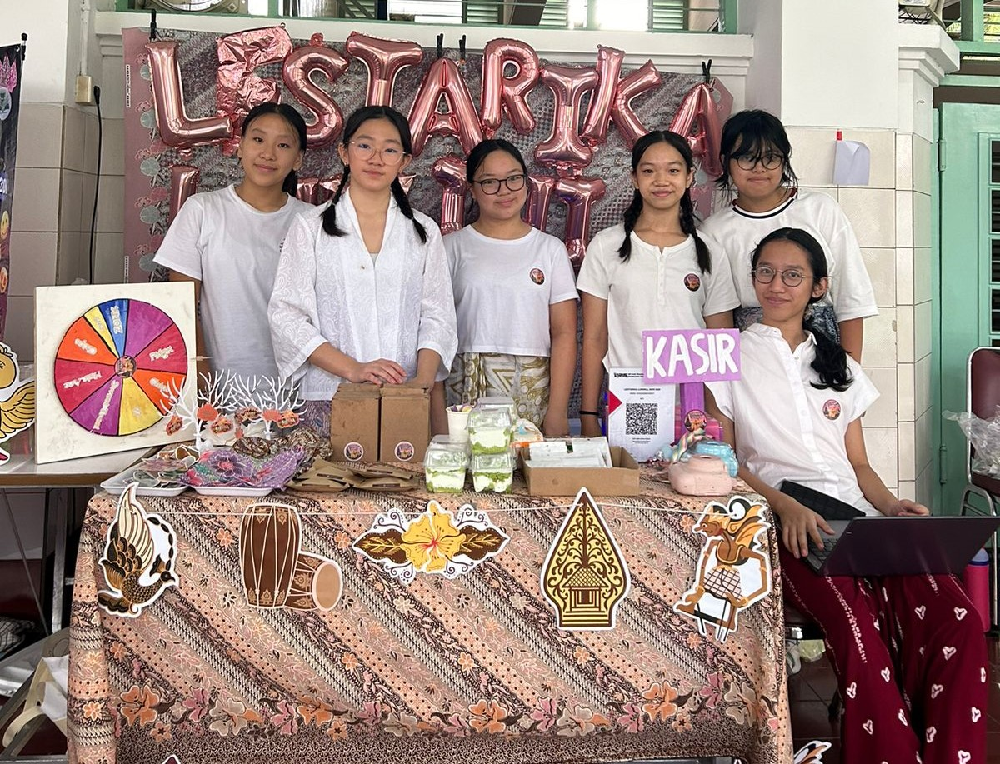
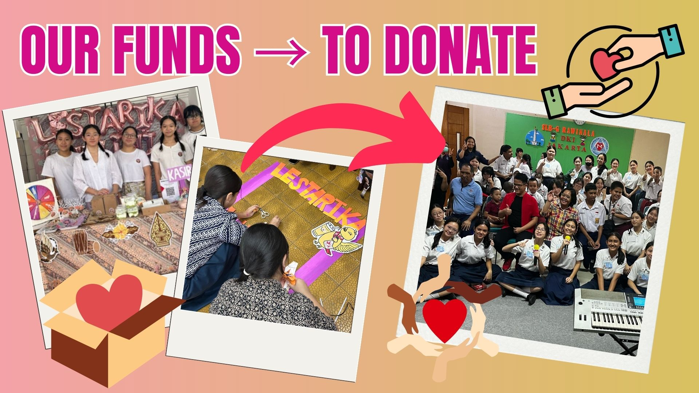

Abstract
The biggest project of our whole junior high school journey was to organize a bazaar that integrated multiple academic subjects, including biology, social studies, art, culture, math, and catholic religion. The bazaar showcased products that highlighted local cultural values such as tolerance, mutual respect, and community spirit. Through this initiative, valuable real-world skills were developed as we applied lots of knowledge while collaborating as a team. A portion of the funds raised was donated to charity, allowing us to contribute meaningfully to the community. This project was not just about selling products, it was also about creating something meaningful that could make a big difference.
Extensive planning was conducted months before the bazaar. Long hours were spent brainstorming ideas, refining products, and ensuring every detail was ready and perfect. In biology, biotechnology-based products were explored to create innovative and appealing items. We made bread from scratch, using yeast as the biotechnology and the most important condiment. Then we make that bread into a Katsu Sandwich, because we know not only teens but also teachers and parents would like that. Research on materials and methods was carried out to ensure the products were high quality and durable. In social studies, pricing strategies were designed to balance affordability with profitability. Every decision was carefully thought out, as we knew our work would represent not only our team but also the cultural values we uphold. Digital tools like Google Sheets and Google Docs were utilized to manage inventory, track sales, and organize all essential information. Late nights became common as we worked tirelessly to bring our vision into life, knowing that our dedication would shape the outcome of our shop.
To promote the bazaar, creative marketing strategies were implemented with passion and persistence. Our team, named “Lestarika Luminia” reflected our commitment to preserving and celebrating cultural heritage. A mascot inspired by the golden bird from Central Java, known as “burung kepodang emas” was designed to represent cultural wealth. Social media platforms like Instagram and Tiktok were used to share sneak peeks, updates, and generating excitement and engaging potential customers. Posts were carefully crafted to capture and share our products and hard work behind them. Each update was a reflection of our desire to make our booth and shop stand out and leave a lasting impression on our viewers.
As the event approached, careful attention was given to booth design and product presentation. Every product was arranged to create a visually appealing display that reflected the theme of local culture. Handmade products, including pouch batik that we sew it by ourself, java keychains that we designed, drinks and snacks that can easily make our customers happy were offered. Small items such as stickers and jumbo blast balloons showcasing local artistic elements were also sold. Nothing was left, because we had planned every detail from the layout of the bazaar to the customer experience, was thoughtfully planned. On the day of the bazaar, the booth was set up collaboratively, with each team member assigned with specific roles such as preparing the drinks and foods product, the cashier, and engaging with customers. Effort were made to create a warm and welcoming atmosphere while sharing the cultural significance behind each product. Each conversation with a customer was seen as an opportunity to share our story and the values we represented.
A significant portion of the proceeds was donated to the Rawinala Foundation, which supports children with special needs. This charitable contribution added the deeper meaning to our efforts and reinforced the importance of giving back to society. The donation was received with gratitude, reminding us that our hard work had a big impact not just to us, but also to other people around us. After the event, a comprehensive financial report was compiled using Google Sheets to document all transactions, profit, and salary. Additionally, a website was created using VSCode to showcase the project’s journey, including the planning process, product highlights, and teamwork experiences. The website was really designed to capture the spirit of our project and provide a long lasting record of our big journey.
Throughout the project, various challenges were encountered. Difficulties in booth organization and product arrangement were faced, along with a couple miscommunication and disagreements within the team. At times, the pressure felt overwhelming, but we refused to give up. These obstacles were overcome through open communication and problem solving. Our resilience was tested, but our shared vision kept us going. This experience provided valuable lessons in teamwork, resilience, and effective problem solving while strengthening our ability to adapt under a big pressure. Valuable life skills were developed, including patience, empathy, and the power of perseverance. Through every hardship, we learned that true success is not just about what we achieve, but about the journey and the impact we leave behind. We wouldn’t have been able to overcome our challenges without the help and supports from family, teachers, and friends. Also the dedication from SMP Santa Ursula Jakarta to every student to have Serviam Core Values.
In conclusion, the bazaar project was a big success. Beyond raising funds for a meaningful cause, it provided us with invaluable practical experience in collaboration, innovation, and social responsibility. The countless hours of dedication, the setbacks we faced, and the solutions we found all contributed to a project that became larger than any of us individually. Through this project, academic knowledge was applied to a real world scenario, and lasting skills in teamwork and cultural awareness were developed, leaving a positive impact on both our team and other people around. It was not just a bazaar, it was a testimony to the power of unity, dedication, and the belief that even small actions can create a big meaningful change.